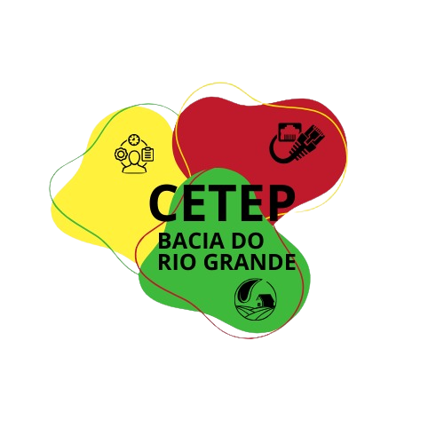

ADMINISTRAÇÃO
O curso tem
como
objetivos
específicos
formar
profissionais capazes
de:
Formar profissionais capazes de aplicar e supervisionar os recursos tecnológicos gerenciais e a
informação
de visão
mercadológica, prospectiva e inovadora;
Desenvolver as competências profissionais necessárias e comuns a todo profissional que atua no Eixo
Tecnológico de
Gestão e Negócios de modo a favorecer o diálogo e a interação com os demais profissionais da esfera
de
atuação.
Capacitar e desenvolver competências profissionais que lhes permitam formular, discutir, analisar,
selecionar e
implementar estratégias de gestão do próprio processo de trabalho.